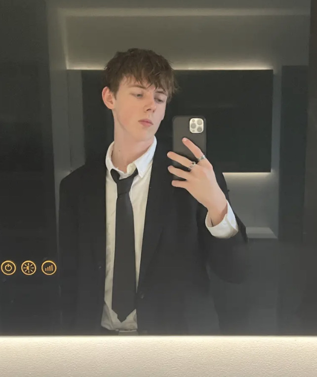

Jan Johan Mick Breijer
28 Mei 2005
Op wie zijn website ben je nu?
Ik ben Jan Johan Mick Breijer, oftwel Mick Breijer, en ik ben geboren op 28 Mei 2005 in Dordrecht en ik woon nu in Papendrecht. Ik studeer op dit moment Creative Media and Gaming Technologies (CMGT) aan de hogeschool Hogeschool Rotterdam. Ik zit nu in mijn eerste jaar van de opleiding.
Waarom CMGT?
Ik ben al sinds kleins af aan ongelofelijk geinterreseerd in programmeren en games. Jammer genoeg waren alle open dagen die ik bezocht het teveel van het een en niet genoeg van het ander. Gelukkig stelde een vriend de Hogeschool Rotterdam voor om te kijken, en na die open dag was ik nogsteeds niet tevreden. Na afloop van deze open dag keek ik op de brochures van de verschillende opleidingen en vondt ik CMGT en na kort kijken op de website was ik verkocht.